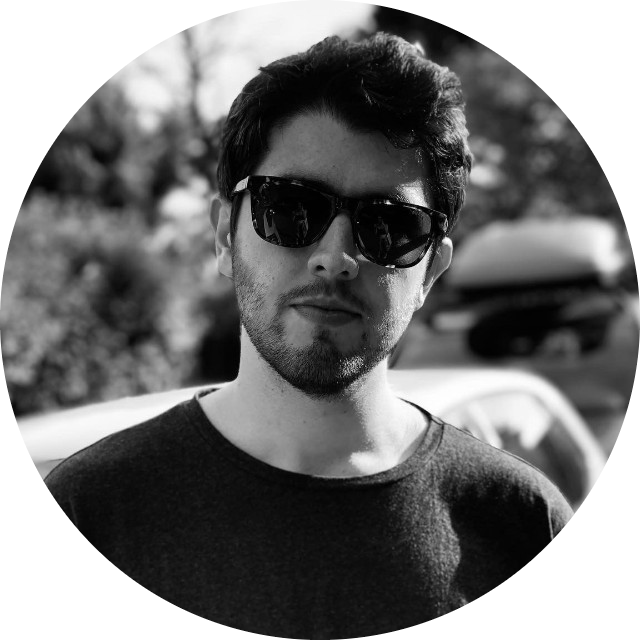

|  |
Emre KARDAŞJR Developer My name is Emre KARDAŞ and I was born in Kayseri in 1999. I graduated from Yeditepe University with a
bachelor's degree |
Sep 2017 - June 2022 |
Information System and Technologies Yeditepe University Bachelor's Degree CPGA : 2.98 |
Mar 2022 - June 2022 |
Back-end Developer Intern AssisTT, Istanbul Back-end Development C# Developer Intern |
Aug 2020 - Nov 2021 |
E-Commerce Manager Özer Gurme, Balıkesir Designed a website and developed with TICIMAX e-commerce system. Managed all website operations. |
Mar 2020 - Oct 2020 |
Full-stack Developer GramAjans, Balıkesir Design and developed e-commerce and corporate websites |
|
|
|
|
+90 534 889 25 84, aykut.kilic@sony.com
+90 506 552 52 87, mert@mertgundogdu.com
+90 530 607 68 24, erhan.tumsa@yeditepe.edu.tr
+90 542 607 75 87, erhan.tumsa@yeditepe.edu.tr
baris.yalcinkaya@yeditepe.edu.tr
zafer.demirkol@yeditepe.edu.tr